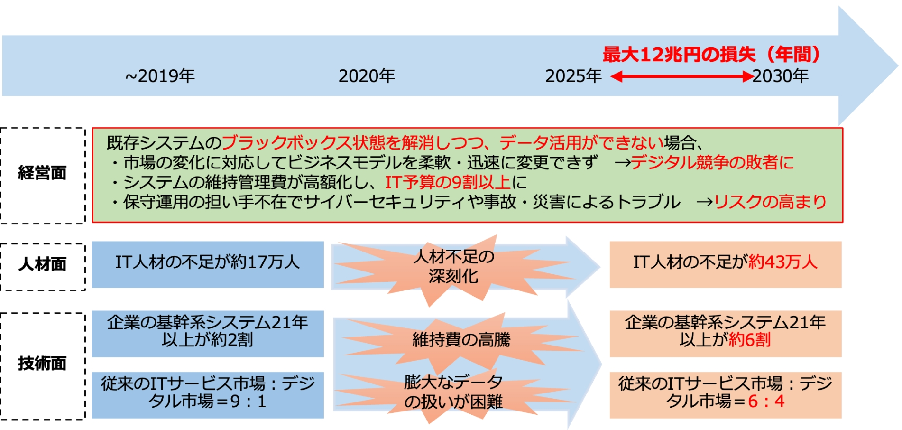

4-2-2. 経済産業省のDXレポートから見る、「攻めのIT」に取組む方針について
2025年の崖
「2025年の崖」とは、経済産業省が2018年に発表した「DXレポート ～ITシステム「2025年の崖」の克服とDXの本格的な展開〜」にて提示されているキーワードです。このレポートでは、2025年は、基幹系システムのサポート終了に伴う維持費の増加や人材不足の深刻化などが集中する年であると予測されています。また、こうした既存のITシステムを巡る問題を解消しない限りは、DXを本格的に展開することは困難であると指摘しています。さらに、レポートによれば、日本企業がDXを推進できなかった場合の経済的な損失は、年間最大で12兆円に上ると算出されています。[10]

図22. 「2025年の崖」の概要図
（出典）経済産業省「DXレポート ～ITシステム「2025年の崖」の克服とDXの本格的な展開～」を基に作成
「2025年の崖」に陥らないための対応策
- 「見える化」指標、診断スキームの構築
- DX推進ガイドラインの策定
- ITシステムの刷新
- ユーザ企業・ベンダー企業との新しい関係性構築
- DX人材の育成・確保
[10]:経済産業省.” DXレポート ～ITシステム「2025年の崖」の克服とDXの本格的な展開～”. https://www.meti.go.jp/shingikai/mono_info_service/digital_transformation/pdf/20180907_03.pdf, (2023-07-12).